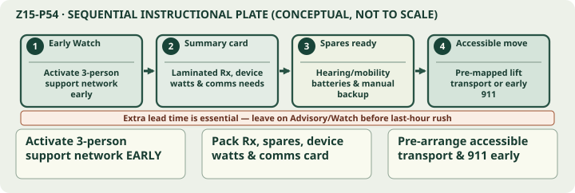

Z15-P54 · Disaster scenarios · New manuscript
Execute accessible evacuations for disability, mobility, and medical-power needs
Provide practical, dignified evacuation execution for household members who use wheelchairs, oxygen, sensory aids, or medical electricity.
When it applies · Households and caregivers supporting individuals with mobility, vision, hearing, cognitive, or medical-technology needs.
Equipment · Personal support network (3+ trusted contacts), backup batteries/manual wheelchair option, medical summary card, and accessible transport plan.

Actions
- Activate your personal support network (at least three trusted neighbors, relatives, or coworkers trained on how your mobility/medical equipment operates) early on Watch/Advisory notices rather than waiting until mandatory final-hour departures.[T10, D14]
- Pack a laminated medical and communication summary card (diagnoses, exact medications/doses, device wattage, allergies, primary clinician, and preferred communication method—e.g., ASL interpreter, large print, written pad) plus spare hearing-aid batteries, glasses, manual cane/chair backup, and labeled device chargers.[T10, D16]
- Confirm accessible vehicle transport (wheelchair-lift van or local paratransit emergency registration) and ADA-accessible shelter capabilities ahead of time, alerting arriving responders immediately to any power-dependent life-support device.[T10, U02]
Failure recognition · Relying solely on a 300-pound powered wheelchair with no manual backup or pre-arranged lift-van network during an apartment power outage and flood evacuation.[T10, U01]
Verify · Confirm 3-person personal support network briefed, medical summary card packed, spare sensory/battery supplies charged, and accessible exit pre-mapped.[T10]
Stop or change course · Imminent medical-battery exhaustion or blocked accessible exit requires calling 911 early to request specialized EMS/fire accessible extraction.[T10, U17]
Evidence and editorial notes
- D14 · FEMA / Ready.gov · Evacuation (current web edition)
- Section: Before, during and after evacuation · Conditions: Official evacuation or a preplanned, safely accessible departure
Support: Prepare a go-kit, routes, transport and a contact plan. Follow official routes and use the locally indicated registration or reunification channel.
Limitations: Shelter accessibility and animal accommodations require local and ADA guidance; no fixed national website is assumed. · Conflicting evidence: See A02 claim audit for boundaries.
Editorial note: Core evacuation execution and accountability evidence in Z15. · Specialist reviewer: Emergency management and transportation safety
Primary source · checked 2026-11-24 - D16 · FEMA / Ready.gov · Financial Preparedness and Vital Records (current web edition)
- Section: Vital Documents, Cash Reserves, Insurance, and Post-Disaster Recovery · Conditions: 30-day resilience planning and post-disaster household recovery
Support: Keep waterproof physical and encrypted offline digital copies of IDs, medical lists, prescriptions, insurance policies, deeds, and emergency contacts alongside small-denomination cash so household transactions and assistance claims survive bank/internet outages.
Limitations: Online-only cloud portals are inaccessible during power and telecom outages. · Conflicting evidence: None; critical pillar of prolonged 30-day household resilience.
Editorial note: Grounds documentation, cash liquidity, and recovery staging cards. · Specialist reviewer: Emergency management and household continuity
Primary source · checked 2026-11-24 - T10 · FEMA / Ready.gov · People with Disabilities (current web edition)
- Section: People with Disabilities > Make a Plan and Build a Kit · Conditions: Individuals with mobility, sensory, medical, or power-dependent access and functional needs
Support: Build a personal support network, plan accessible evacuation transport, register voluntarily with local emergency registries where available, and plan backup power and spare supplies for medical devices, medications, and service animals.
Limitations: Local registry availability and utility priority-restoration policies vary by jurisdiction. · Conflicting evidence: None; extends generic preparedness plans to accessible requirements.
Editorial note: Directly addresses Z01 accessible emergency planning requirement. · Specialist reviewer: Accessible emergency management and disability preparedness
Primary source · checked 2026-11-24 - U01 · FEMA / Ready.gov · Power Outages (current web edition)
- Section: Power Outages > Preparing and Responding Safely · Conditions: Residential utility electrical outages of hours to days
Support: Keep phones/medical batteries charged, maintain flashlights instead of candles, unplug sensitive appliances to protect against restoration surges, and verify backup power plans for electrically dependent medical devices.
Limitations: Home outage durations vary widely by grid damage; extended winter outages require heat/evacuation contingencies. · Conflicting evidence: None; aligns with CPSC and NFPA.
Editorial note: Establishes household outage baseline and medical-power priority in Z13. · Specialist reviewer: Emergency management and electrical safety
Primary source · checked 2026-11-24 - U02 · CPSC · CPSC Warns of Generator, Carbon Monoxide and Fire Hazards Ahead of Hurricane Season (2026 seasonal agency guidance)
- Section: Use portable generators outdoors; keep exhaust away · Conditions: Portable generator during household outage
Support: Run outdoors at least 20 feet from buildings and direct exhaust away. Use approved connections as the manual dictates; licensed electrical work governs transfer to a building. Never backfeed.
Limitations: Distance alone does not guarantee safety. Local code and exact equipment determine installation. · Conflicting evidence: See A02 claim audit for boundaries.
Editorial note: Core electrical isolation boundary across Z13 generator cards. · Specialist reviewer: Licensed electrician and fire safety
Primary source · checked 2026-11-24 - U17 · FEMA / Ready.gov · Evacuation (current web edition)
- Section: Household Evacuation Thresholds When Utilities Fail · Conditions: Uninhabitable indoor temperatures, sewage backup, persistent CO alarm, or structural/utility hazard
Support: Establish clear pre-agreed exit triggers to relocate to a warming center, hotel, or relatives BEFORE indoor freezing, carbon monoxide alarms, medical-device battery exhaustion, or impassable blizzard roads trap occupants.
Limitations: Waiting until indoor pipes burst or batteries hit zero removes safe travel options. · Conflicting evidence: None; aligns with T13 and E14.
Editorial note: Defines objective household abandonment thresholds in Z13. · Specialist reviewer: Emergency management and cold-weather operations
Primary source · checked 2026-11-24
Source lineage · FEMA People with Disabilities; new manuscript · Classification · New manuscript.